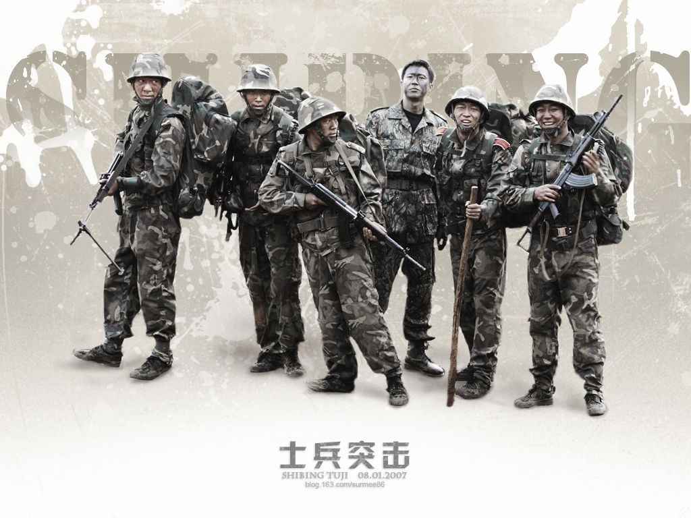
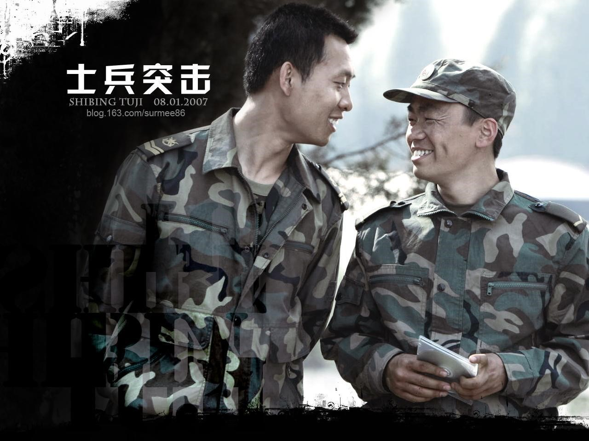
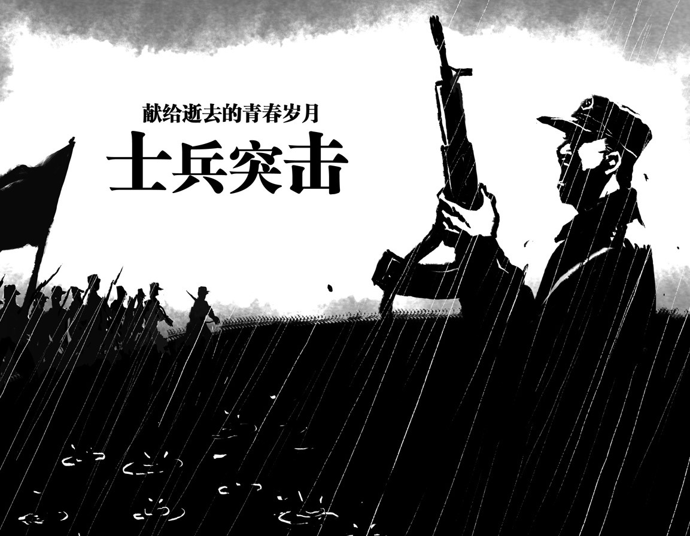

康洪雷酷爱军事题材，用他自己的话来说自己就是“半个兵迷”。越是喜爱就越会战战兢兢，所以对待这个题材也就格外审慎。当初从话剧舞台转战电视剧导演，他就想拍一个军人能看，百姓也能看的军事题材的电视剧。十三年前，也就是2004年，康洪雷经朋友介绍观看了北京军区战友话剧团的话剧——《爱尔纳·突击》。没有想到的是在开演之前，话剧团的一个领导走上台来说了几句话，“今天，是我们话剧团即将解散的最后一个晚上，今天演出完之后，北京军区战友话剧团就要从中国人民解放军的序列里永远消失了。”大幕拉开，战士们那种悲壮的气氛、离别的无奈、服从的坚定扑面而来，“其实，那一天话剧的好多情节我都记不起来了，但是那个气氛始终笼罩着我，就记得我在底下哭啊，忍不住的哭。”话剧谢幕的时候，康洪雷上去和演员挨个拥抱，就在那个时候，他第一次深刻体会到什么叫“铁打的营盘，流水的兵”。也就在那时，他下决心要找到话剧的编剧，把《爱尔纳·突击》拍成电视剧。
后来，通过朋友找到了话剧的编剧兰晓龙的电话，说明了意愿后，兰晓龙的回答让他兴奋不已“剧本早都写好了，都已经写了两年了。”然而，兰晓龙随后的话又让他的心凉了半截。“不过剧本现在不在我的手上，卖给上海的一个公司了，你如果想做，我可以帮你问问”。在之后和这家公司接洽的过程中，由于理念和资金的问题，让康洪雷暂时放下了拍摄的念想。“作为一个文艺作品，一定要有脊梁，要让大家觉得有安全感，没有这些，再好的本子我都可以放弃。”从《激情燃烧的岁月》开始，到《士兵突击》，再到《我的团长我的团》，康洪雷用自己的作品阐释了什么叫脊梁，什么叫安全感。那是一种由内而外散发的精神，一种坚守，一种人心底最美好、最简单的品质。
“合同到期，上海的公司没有拍，剧本回来了，现在在八一厂张歉（作者注：《士兵突击》制片人）手里，你要不要做？”一年后，兰晓龙的一个电话，又把《士兵突击》拉倒了康洪雷的面前。康洪雷说我肯定要做，因为这一年，自己一直惦记着这事儿。“有的时候，钱真不是事儿，理念的一致才是一切合作的基础。”和张歉、兰晓龙详谈之后，康洪雷觉得这事儿一定能成，因为，他们对部队的热爱是一致的，对兵的情怀是一致的。
十年 • 重温：我们拍的是一种对兵的感觉，一种对他们的心疼感，因为你不心疼，你怎么说他们是最可爱的人呢？
十年间，《士兵突击》荣获各大类奖项，被电视台一遍一遍播放，网络上的点击量也屡创新高，当年青涩的“突迷”已初长成人，却依然用“不抛弃不放弃”的精神激励自己。然而，就是这样一部在十年间都没有被下架的电视剧，在其最初亮相的时候，却饱受争议。“当时，我们也想在一些卫视甚至是央视播这个剧，但是很多传统媒体觉得这个戏没有矛盾，他们眼中的矛盾必须是一个正派，一个反派这样的构架，这个戏里确实没有，我们就是讲述了基层连队、普通战士的故事。另外，他们觉得没有爱情，都是老爷们，一帮老爷们演的戏哪有什么意思？但这个确实不可能会有，你想一个基层连队怎么可能有女人？”就这样，被电视台“遗弃”的《士兵突击》选择了在网络上播出，“那时候的网络没有现在这么发达，但通过网络，很多人被剧中的情节感动，在网络上靠青年人的口碑蒸发起来以后，地方台开始接受，后来北京卫视开始播。”于是，人们记住了草原上五班的孤独，记住了钢七连的硬骨头，记住了不抛弃不放弃，记住了好好活就是有意义……
十年之后再回头看这部戏，谈到观众对其的喜爱，康洪雷用了“化学效应”这个词。“抓住观众的心，要和他们神交，这不是简简单单的物理变化，而是一种化学变化，一种化学效应。”《士兵突击》绝对不是一个乌托邦架空的地方，它在观众心中是有抚慰的，有激励的。很多观众心里拥有非常可贵的东西，只不过平常不显现出来，这些沉默的大多数，平日里没有什么话语权，直到《士兵突击》的出现，让大家迷茫地走了很久之后，忽然就有了一种支撑。“有观众跟我说，在最低谷的时候看了《士兵突击》，看完后马上觉得自己要振作起来干点什么。所以说，这不单单是个电视剧，它会在你低谷的时候支撑你，在你无助的时候鼓励你，这是影视剧超越作品本身的意义所在。”一直以来，剧中憨傻又执着的许三多和心机又聪明的成才是大家讨论的热点，在现实生活中，对于谁更容易成功这个问题，康洪雷心中有着自己的答案。“我觉得许三多和成才是同一个人，我们每个人的身上都有他们两个的影子。成才是当今社会我们生存的手段，一种技巧，是一种外化的我；许三多是我们中国人从娘胎里出来就自有的，道德的东西，是一种内化的我。他们两个同时前进，同时出发。”这就是康洪雷用镜头告诉我们的生活哲学。
和康洪雷的交流中，你可以感受到他打心眼里对战士的喜爱。 “我上小学的时候读魏巍的《谁是最可爱的人》，包括后来我们看到的八一厂的《打击侵略者》、《奇袭》等等，真的会让你觉得战士们是一群可爱的人”。然而当初拍摄的时候，从导演康洪雷到主演王宝强、陈思成等，谁都没想到卯着劲把《士兵突击》做成一个惊世骇俗的作品，整部戏对他们而言就是一种很自然的情感流露，用康导自己的话来说就是：“我们拍的是一种对兵的感觉，一种对他们的心疼感，因为你不心疼，你怎么说他们是最可爱的人呢？”十年，变了的有很多，没变的也有很多。“我依然相信这个世界的真善美，依然相信人和人之间的信任，依然相信着这个钢铁长城是绿色的，再看到那些基层的战士，依然还是很心疼他们，还想为他们干点什么。”十年，康洪雷用每天拾起的一点点石头，构筑着属于自己的金字塔。
十年 • 再见：人靠什么往前走？就是忘了所谓的成就，向前看。
曾经有人问白岩松，《士兵突击》的精神可持续吗？白岩松说：“持续时间长短不重要，重要的是，因为这部戏所碰撞出的那些人内心的东西，它不是一个结束，而是刚刚开始。比如真诚、执着、坚持、信任……”康洪雷的作品一直以来都不复杂，从他的作品中可以看到，他是有尘世味道的，他不是象牙塔里好高骛远的导演，他喜欢的东西，他拍的东西，都跟人群有关，跟情感有关。正如著名学者张西所言，“康洪雷的出现虽然是现代的，但是他的道德却是古典的，他知道只要按规则行事，每个人的行为都会是洁净的。”
十年来，原班人马拍摄《士兵突击》续集的呼声从来都没有消失过，然而在康洪雷的心中，他却要跟《士兵突击》说再见。“《士兵突击》于我而言，是一种荣耀，但同时也是一种禁锢，后来人们见到我，都说你拍的《士兵突击》怎样怎样，就好像我没有其他的戏了一样。老在一片赞美声中，人就会容易停滞不前。人靠什么往前走？就是忘了所谓的成就，向前看。”现在看来，《士兵突击》一部戏，捧出了当前实力派男演员的半壁江山。饰演伍班副的邢佳栋调侃道：“这都十年了，前几天在机场候机的时候，还有人要跟伍六一合影。”被人记住是好事，但是在康洪雷看来，演员要演成百上千个人物才是有价值，导演要导成百上千部好片子才能立得住脚。“其实，《士兵突击》更像是一个家，所有的演员都是这个家里的兄弟姐妹，总有一天，他们要走出家门，去奔赴各自的前程。不能因为一个东西成功了，大家就会永远躺在这里。”的确，这世上，没有什么可以吃一辈子，再见，于康洪雷，他希望能够再出发。
康洪雷坦言，未来，想拍一个现代军队面向未来的，有科技含量的军事题材的电视剧。“过去，我们展示的都是黑脸汉子，一身肌肉，但是未来不会是这样的，我想拍一个为当代小白脸证明的现代军事剧，那些潜水战士一下潜就是半个多月，那些无人机驾驶员都是戴眼镜的小白脸，但他们身上同样有着让人钦佩的精神。”从这个角度看，《士兵突击》的再见，于观众而言，又多了几分期待。
十年不长转瞬之间，十年不短无限怀念。
再见，十年。十年，再出发。
图片均来自网络